Hypothesis: Deletions at a TAD boundary cause the largest structural
change (TADs merge); deletions within a TAD body cause little change. Method: Predict WT once; for each deletion size and each of 12
evenly-spaced positions, simulate a deletion and compare to WT. Jingyun's actual insulator: chr13:83,739,797–83,745,138
(5,341 bp) — highlighted in red.
Metrics explained
• Mean |Δ contact| — total reorganisation; higher = more change.
• Cross-TAD contact gain — positive = domains merging.
• Insulation weakening — positive = boundary lost.
Cross-Size Comparison
How deletion size affects the spatial sensitivity pattern.
Top: global impact heatmap (position × size).
Middle: insulation weakening heatmap.
Bottom: rank of Jingyun's actual insulator at each deletion size.
Cross-size comparison for Jingyun chr13.
10 kb Deletions
Rank
Centre (bp)
Deletion range
Mean |Δ contact|
Cross-TAD gain
Ins. weakening
#1
83,230,227
83,230,227–83,240,227
0.04632
-0.00785
+0.00165
#2
83,322,452
83,322,452–83,332,452
0.04527
-0.00793
+0.00206
#3
83,414,677
83,414,677–83,424,677
0.04453
-0.01370
+0.00386
#4
83,506,903
83,506,903–83,516,903
0.04270
-0.01549
-0.04950
#5
83,599,128
83,599,128–83,609,128
0.04242
-0.01998
-0.01820
#6
83,691,354
83,691,354–83,701,354
0.03110
+0.00986
-0.09313
#7
83,742,467
83,742,467–83,752,467
0.01917 ⭐ ACTUAL
-0.00143
-0.02074
#8
83,875,805
83,875,805–83,885,805
0.01518
-0.00006
+0.00914
#9
83,968,030
83,968,030–83,978,030
0.01301
-0.00220
-0.00433
#10
84,060,256
84,060,256–84,070,256
0.01133
-0.00586
+0.02876
#11
84,152,481
84,152,481–84,162,481
0.00749
-0.01853
-0.00843
#12
84,244,707
84,244,707–84,254,707
0.00189
-0.01496
-0.00795
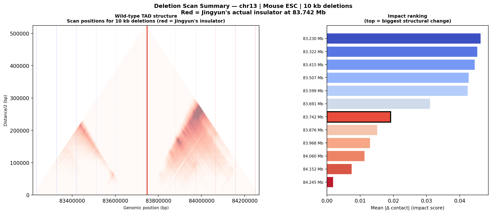WT triangle with 10 kb scan positions. Right: impact ranking.Three metrics at each position for 10 kb deletions. Red bar = Jingyun's actual insulator.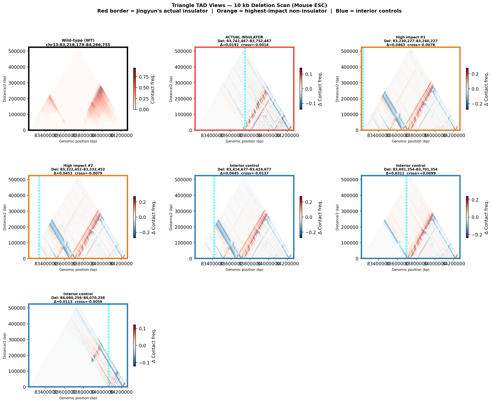Triangle difference maps for selected sites (10 kb deletions).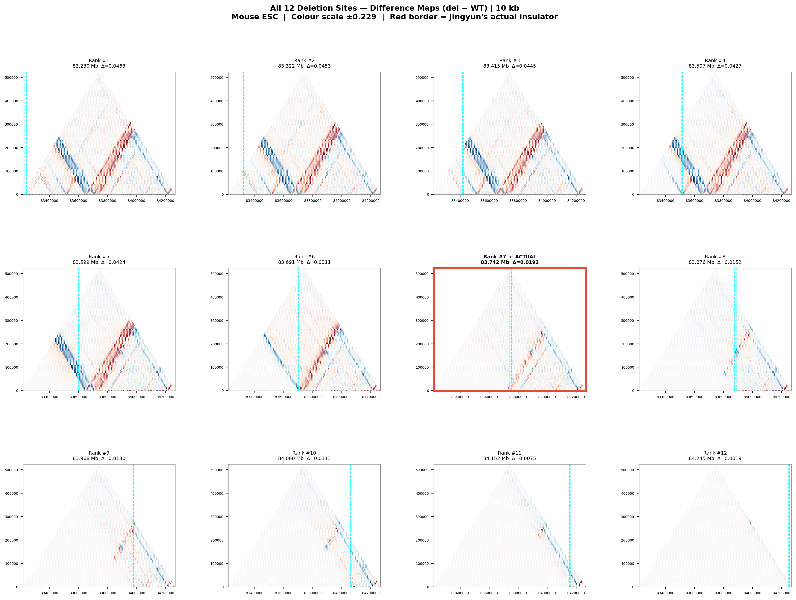All 12 sites — 10 kb deletions — shared colour scale.
40 kb Deletions
Rank
Centre (bp)
Deletion range
Mean |Δ contact|
Cross-TAD gain
Ins. weakening
#1
83,260,227
83,260,227–83,300,227
0.13404
-0.03358
+0.01310
#2
83,344,270
83,344,270–83,384,270
0.13368
-0.03600
-0.00370
#3
83,428,314
83,428,314–83,468,314
0.13154
-0.04720
-0.00035
#4
83,512,357
83,512,357–83,552,357
0.13033
-0.05017
+0.11384
#5
83,596,401
83,596,401–83,636,401
0.12772
-0.06665
-0.31579
#6
83,680,445
83,680,445–83,720,445
0.11145
+0.09747
-0.14793
#7
83,742,467
83,742,467–83,782,467
0.03519 ⭐ ACTUAL
+0.00793
-0.00140
#8
83,848,532
83,848,532–83,888,532
0.03064
-0.00509
+0.01234
#9
83,932,576
83,932,576–83,972,576
0.02901
-0.01421
-0.00353
#10
84,016,619
84,016,619–84,056,619
0.02684
-0.01762
-0.04049
#11
84,100,663
84,100,663–84,140,663
0.02025
-0.03513
+0.00755
#12
84,184,707
84,184,707–84,224,707
0.01361
+0.02266
+0.03018
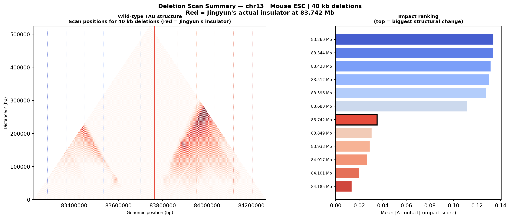WT triangle with 40 kb scan positions. Right: impact ranking.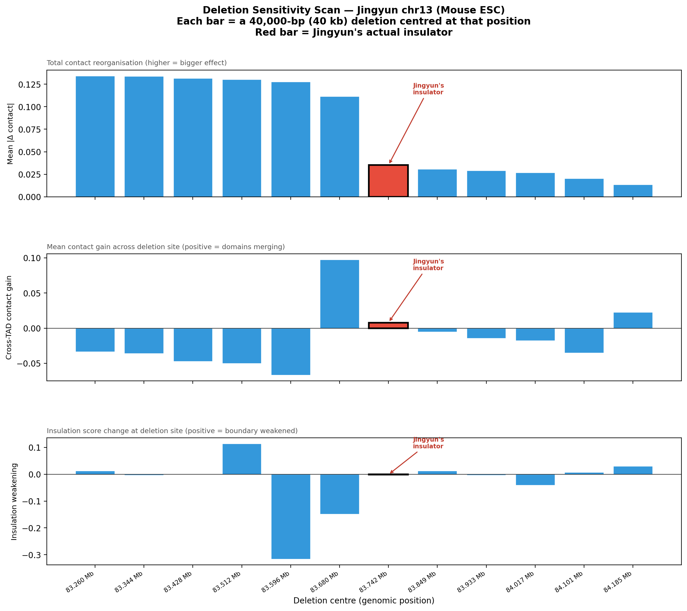Three metrics at each position for 40 kb deletions. Red bar = Jingyun's actual insulator.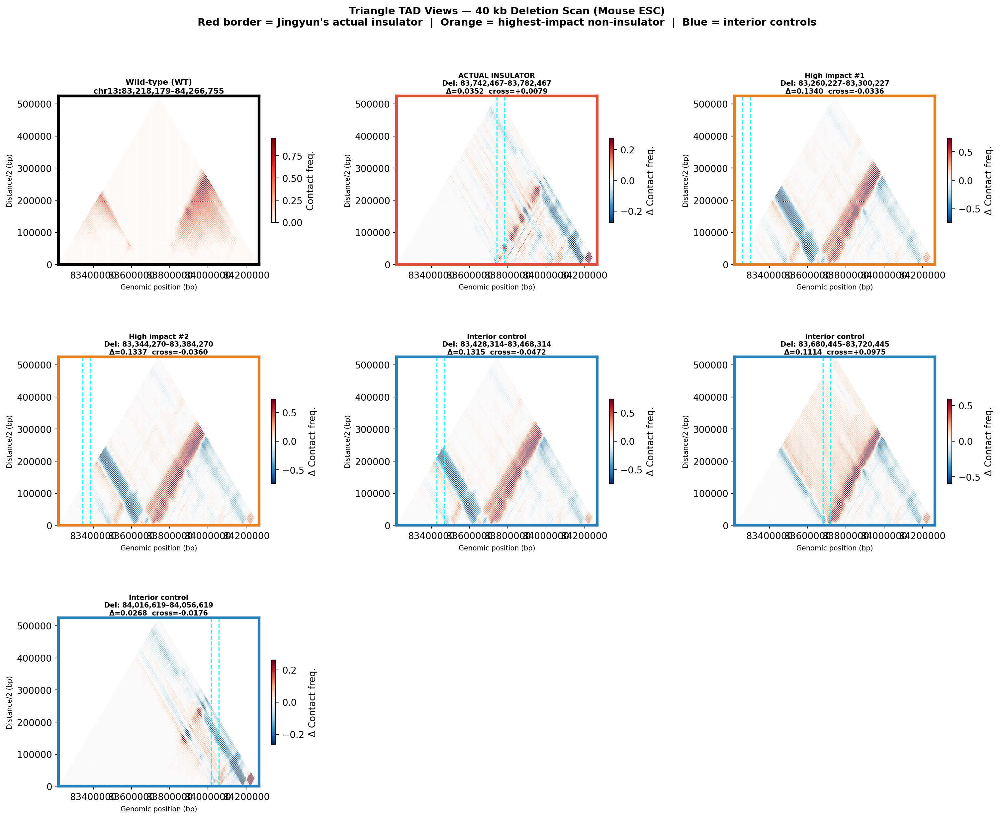Triangle difference maps for selected sites (40 kb deletions).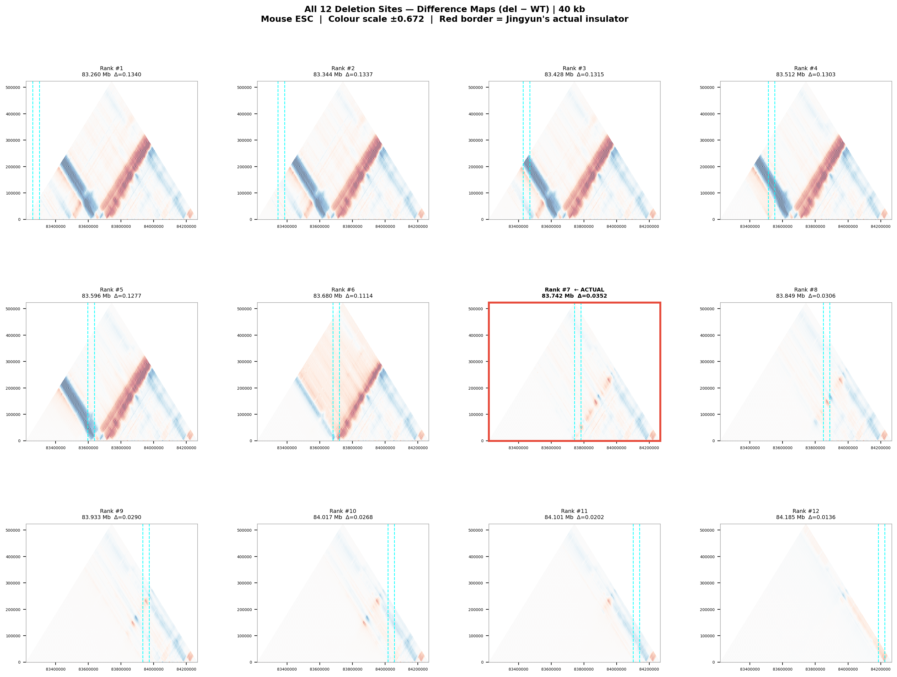All 12 sites — 40 kb deletions — shared colour scale.
80 kb Deletions
Rank
Centre (bp)
Deletion range
Mean |Δ contact|
Cross-TAD gain
Ins. weakening
#1
83,592,765
83,592,765–83,672,765
0.23932
+0.05701
-0.22627
#2
83,300,227
83,300,227–83,380,227
0.22774
-0.07537
-0.00086
#3
83,373,361
83,373,361–83,453,361
0.22612
-0.08524
+0.02423
#4
83,446,496
83,446,496–83,526,496
0.22223
-0.09831
-0.04565
#5
83,519,630
83,519,630–83,599,630
0.22128
-0.10264
+0.09753
#6
83,665,899
83,665,899–83,745,899
0.18357
+0.22852
+0.04059
#7
83,742,467
83,742,467–83,822,467
0.04664 ⭐ ACTUAL
+0.01350
-0.00775
#8
83,812,168
83,812,168–83,892,168
0.04358
+0.00064
-0.00100
#9
83,885,303
83,885,303–83,965,303
0.04104
-0.00973
+0.01664
#10
83,958,437
83,958,437–84,038,437
0.03812
-0.00655
-0.00754
#11
84,031,572
84,031,572–84,111,572
0.03529
-0.03594
+0.01108
#12
84,104,707
84,104,707–84,184,707
0.03012
-0.03462
-0.02701
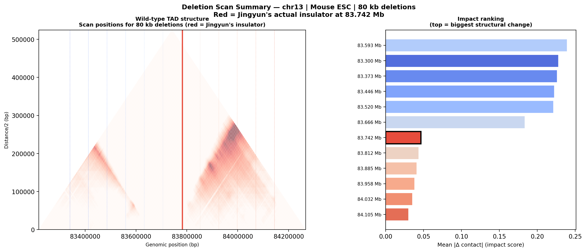WT triangle with 80 kb scan positions. Right: impact ranking.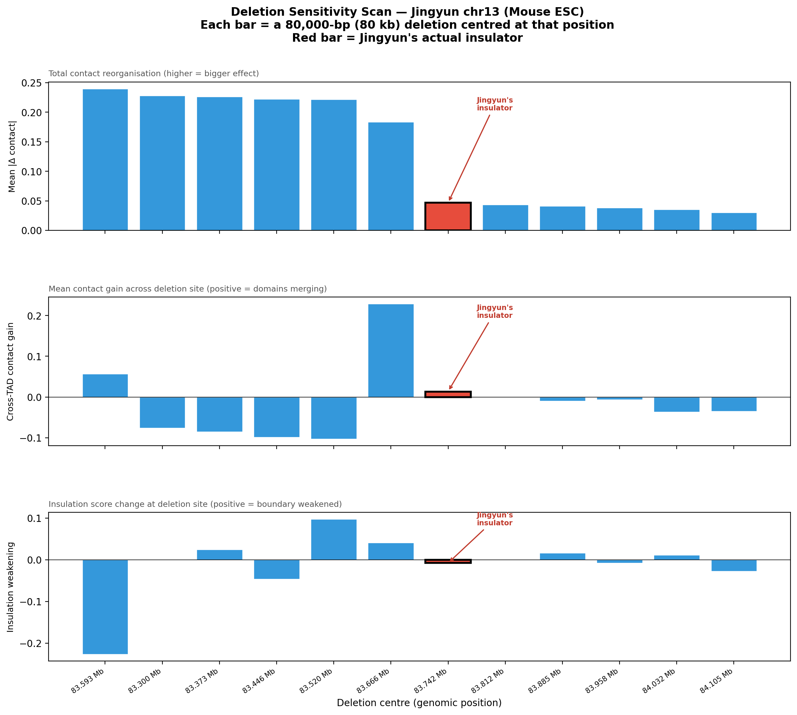Three metrics at each position for 80 kb deletions. Red bar = Jingyun's actual insulator.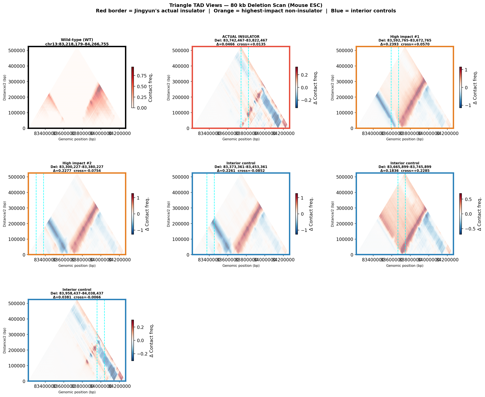Triangle difference maps for selected sites (80 kb deletions).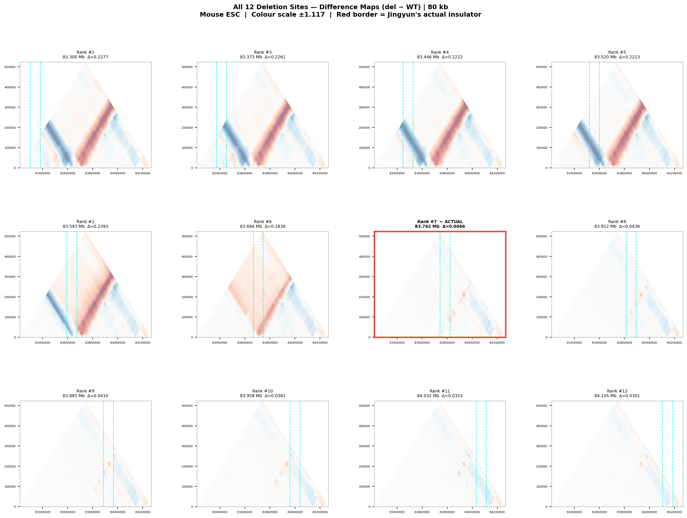All 12 sites — 80 kb deletions — shared colour scale.